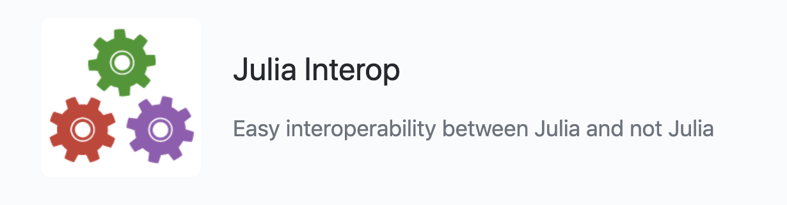

5: Other tools for Data Science
ISMB 2022 Madison
So far you have learned
- Data tools with
Arrow.jlandTables.jl - Model fitting with
MixedModels.jl
Other Data Science tools in Julia
- Communication with other systems: R and python
- Package system
- Plotting
- Tuning performance
- Literate programming
Communication with other systems: Julia interoperability

Note: Both RCall and PyCall are written 100% julia
RCall
Switching between julia and R using $:
julia> using RCall
julia> foo = 1
1
R> x <- $foo
R> x
[1] 1Macros @rget and @rput:
julia> z = 1
1
julia> @rput z
1
R> z
[1] 1
R> r = 2
julia> @rget r
2.0
julia> r
2.0R"" string macro:
julia> R"rnorm(10)"
RObject{RealSxp}
[1] 0.9515526 -2.1268329 -1.1197652 -1.3737837 -0.5308834 -0.1053615
[7] 1.0949319 -0.8180752 0.7316163 -1.3735100Large chunk of code:
julia> y=1
1
julia> R"""
f<-function(x,y) x+y
ret<- f(1,$y)
"""
RObject{RealSxp}
[1] 2A small example from this blog
Simulate data
julia> using Random
julia> Random.seed!(1234)
MersenneTwister(1234)
julia> X = randn(3,2)
3×2 Matrix{Float64}:
0.867347 -0.902914
-0.901744 0.864401
-0.494479 2.21188
julia> b = reshape([2.0, 3.0], 2,1)
2×1 Matrix{Float64}:
2.0
3.0
julia> y = X * b + randn(3,1)
3×1 Matrix{Float64}:
-0.4412351955236954
0.5179809120122916
6.149009488103242Fit a model
julia> @rput y
3×1 Matrix{Float64}:
-0.4412351955236954
0.5179809120122916
6.149009488103242
julia> @rput X
3×2 Matrix{Float64}:
0.867347 -0.902914
-0.901744 0.864401
-0.494479 2.21188
julia> R"mod <- lm(y ~ X-1)"
RObject{VecSxp}
Call:
lm(formula = y ~ X - 1)
Coefficients:
X1 X2
2.867 3.418
julia> R"summary(mod)"
RObject{VecSxp}
Call:
lm(formula = y ~ X - 1)
Residuals:
1 2 3
0.158301 0.148692 0.006511
Coefficients:
Estimate Std. Error t value Pr(>|t|)
X1 2.8669 0.2566 11.17 0.0568 .
X2 3.4180 0.1359 25.15 0.0253 *
---
Signif. codes: 0 ‘***’ 0.001 ‘**’ 0.01 ‘*’ 0.05 ‘.’ 0.1 ‘ ’ 1
Residual standard error: 0.2173 on 1 degrees of freedom
Multiple R-squared: 0.9988, Adjusted R-squared: 0.9963
F-statistic: 404.8 on 2 and 1 DF, p-value: 0.03512
julia> R"plot(X[,1],y)"PyCall
Note that (@v1.8) pkg> add PyCall will use the Conda.jl package to install a minimal Python distribution (via Miniforge) that is private to Julia (not in your PATH).
We need to make sure that which conda points at the conda folder inside .julia, so we need to put ~/.julia/conda/3/bin early on the PATH. In Mac zsh, we need to add export PATH=~/.julia/conda/3/bin:$PATH in the ~/.zshrc file. (Those who prefer not to conda-ize their entire environment may instead choose just to link ~/.julia/conda/3/bin/{conda,jupyter,python,python3} somewhere on their existing path, such as ~/bin.)
Simple example:
using PyCall
math = pyimport("math")
math.sin(math.pi / 4)py"..." evaluates "..." as Python code:
py"""
import numpy as np
def sinpi(x):
return np.sin(np.pi * x)
"""
py"sinpi"(1)More on Julia/python connectivity
Package system
- Starting on Julia 1.6, precompilation is much faster
- Many changes under the hood that allow things to work faster and more smoothly
- A local environment can be established and preserved with
Project.tomlandManifest.tomlfiles. - Use of
Artifacts.tomlallows for binary dependencies
Landscape of Julia packages for biology
- BioJulia is a combination of Julia packages for biology applications.
- Julia for Biologists is an arxiv paper the features that make Julia a perfect language for bioinformatics and computational biology.
- List of useful packages from another workshop, SMLP2022
Plotting
Performance tips
See more in Julia docs
@time to measure performance
julia> x = rand(1000);
julia> function sum_global()
s = 0.0
for i in x
s += i
end
return s
end;
julia> @time sum_global() ## function gets compiled
0.017705 seconds (15.28 k allocations: 694.484 KiB)
496.84883432553846
julia> @time sum_global()
0.000140 seconds (3.49 k allocations: 70.313 KiB)
496.84883432553846Break functions into multiple definitions
The function
using LinearAlgebra
function mynorm(A)
if isa(A, Vector)
return sqrt(real(dot(A,A)))
elseif isa(A, Matrix)
return maximum(svdvals(A))
else
error("mynorm: invalid argument")
end
endshould really be written as
norm(x::Vector) = sqrt(real(dot(x, x)))
norm(A::Matrix) = maximum(svdvals(A))to allow the compiler to directly call the most applicable code.
Multiple dispatch
- The choice of which method to execute when a function is applied is called dispatch
- Julia allows the dispatch process to choose based on the number of arguments given, and on the types of all of the function’s arguments
- This is denoted multiple dispatch
- This is different than traditional object-oriented languages, where dispatch occurs based only on the first argument
julia> f(x::Float64, y::Float64) = 2x + y
f (generic function with 1 method)
julia> f(2.0, 3.0)
7.0
julia> f(2.0, 3)
ERROR: MethodError: no method matching f(::Float64, ::Int64)
Closest candidates are:
f(::Float64, !Matched::Float64) at none:1Compare to
julia> f(x::Number, y::Number) = 2x + y
f (generic function with 2 methods)
julia> f(2.0, 3.0)
7.0
julia> f(2, 3.0)
7.0
julia> f(2.0, 3)
7.0
julia> f(2, 3)
7Profiling
Read more in Julia docs.
julia> function myfunc()
A = rand(200, 200, 400)
maximum(A)
end
julia> myfunc() # run once to force compilation
julia> using Profile
julia> @profile myfunc()
julia> Profile.print()To see the profiling results, there are several graphical browsers (see Julia docs).
Other packages for performance
- BenchmarkTools.jl: performance tracking of Julia code
- Traceur.jl: You run your code, it tells you about any obvious performance traps
Literate programming
- quarto.org. These notes are rendered with quarto!
- Jupyter
- Pluto.jl
- Weave.jl package provides “Julia markdown” and also provides support for converting between
jmdfiles and Jupyter notebooks. - Literate.jl is a simple package for literate programming (i.e. programming where documentation and code are “woven” together) and can generate Markdown, plain code and Jupyter notebook output.
- Documenter.jl is the standard tool for building webpages from Julia documentation
- Books.jl is a package designed to offer somewhat similar functionality to the
bookdownpackage in R.